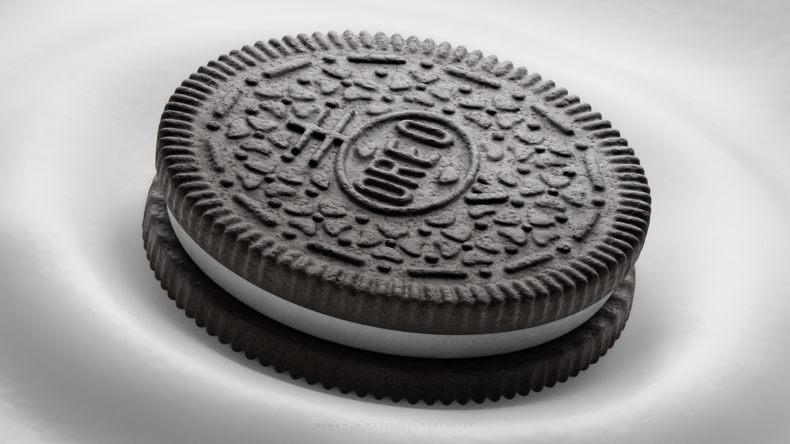

Blender oreo

Description
Create a 3D Oreo in Blender — crisp chocolate cookies with creamy filling,
ready to render. A sweet modeling exercise for practicing materials and
textures!
Ingredients
- 1 cylinder mesh (for the cookie base)
- 1 subdivision surface modifier
- 1 cookie material (dark brown/black, rough surface)
- 1 cream filling mesh (another thinner cylinder)
- 1 cream material (smooth, off-white)
- Lighting and camera setup for tasty renders
Steps
- Open Blender and add a cylinder for the cookie.
- Apply a subdivision surface modifier and enable smooth shading.
- Create a dark, rough material for the cookie surface.
- Add another thin cylinder between two cookies for the cream filling.
- Apply a smooth, glossy white material to the cream.
- Set up lighting and camera for a photorealistic look.
- Render your Oreo and enjoy your 3D snack!
Home